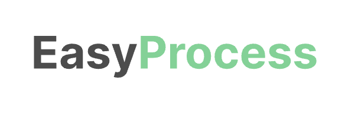

CRM
Antes
Contatos e negociações soltos em planilha e WhatsApp
Depois
Funil de vendas com histórico de cada cliente e lembrete de retorno

Tecnologia e consultoria
Transformamos empresas que não são de tecnologia em empresas tecnológicas.
Sistemas que criamos e empresas que atendemos

Sinais de que a operação travou
Cada setor com a sua versão dos números.
Informação espalhada e retrabalho para encontrar.
Decisão tomada no escuro, tarde demais.
A mesma informação digitada duas, três vezes.
CRM, pedidos, OS, estoque e painéis no formato do seu processo.
Rotinas repetitivas rodando sozinhas; a equipe revisa só as exceções.
Seus sistemas trocando dados, sem redigitação.
IA em tarefas concretas da operação, sempre com revisão humana.
Apoio para as equipes adotarem a mudança, do comercial ao fiscal.
Exemplos
Contatos e negociações soltos em planilha e WhatsApp
Funil de vendas com histórico de cada cliente e lembrete de retorno
Pedido no WhatsApp, redigitado em planilha
Portal onde cliente e vendedor lançam e acompanham o pedido
Ficha em papel e ligação para saber o status
OS no celular do técnico, com fotos e assinatura
Contagem manual e compra de última hora
Saldo em tempo real e alerta de reposição
E-mail encaminhado até alguém responder
Fluxo de aprovação com alçada e prazo
Relatório montado à mão todo fim de mês
Indicadores atualizados sozinhos, por setor
Conferência de notas linha a linha
Validação automática e só as exceções para revisar
Conte o que trava a sua operação.
Falar com um especialistaRápido e seguro
2 a 14 semanas
Do simples ao complexo. A IA acelera o repetitivo; o time foca no seu processo.
100% das entregas revisadas
Revisão técnica e de segurança por um especialista, com verificação OWASP Top 10.
do código gerado por IA tem falhas de segurança. Por isso nada vai ao ar sem revisão.
Fonte: Veracode, GenAI Code Security Report (2025).
Como atuamos
Mapeamento de gargalos e oportunidades.
Plano sob medida, com escopo, prazo e investimento.
Solução com tecnologia, revisão de segurança e foco em resultado.
Evolução contínua e suporte especializado.
Comece pelo diagnóstico.
Uma conversa sem compromisso para entender onde a sua operação trava.

Sobre a AIME Tech
Quatro sócios com experiência em negócio, engenharia, comercial e governança, unidos para tirar empresas da planilha e do retrabalho.
Começamos pelo problema, não pela ferramenta.
Equipe
Antes do código

Sócio da AIME Tech, administrador, especialista em Engenharia de Software com MBA em Gestão Estratégica de Negócios na Era da IA, atua conectando visão de negócio, cultura de produto e transformação.
Na AIME Tech, investiga gargalos operacionais antes que se transformem em projetos de tecnologia. Ouve quem vive o processo, identifica causas e impactos e ajuda gestores a decidir o que realmente precisa ser resolvido, o que priorizar e onde vale a pena investir.
Também apoia empresas na transformação do trabalho diante da IA e da automação, preparando gestores e equipes para identificar oportunidades, avaliar riscos e tomar melhores decisões — começando pelo problema, não pela ferramenta.
Formação
Na construção

Sócio da AIME Tech, profissional de tecnologia com ampla experiência em desenvolvimento de software, arquitetura de soluções e segurança da informação, atua na construção de soluções para ambientes empresariais complexos.
Na AIME Tech, lidera o delivery técnico (a construção e a entrega da solução), transformando os problemas e prioridades identificados no discovery (a investigação do problema antes de construir) em sistemas, automações e integrações construídos com critérios de arquitetura, segurança, qualidade e sustentabilidade.
Sua atuação busca garantir que a velocidade de desenvolvimento não comprometa o futuro da solução. Avalia decisões técnicas, riscos e impactos de manutenção para que cada entrega tenha uma base sólida, preparada para operar, evoluir e se sustentar ao longo do tempo.
Formação
Durante a relação

Sócia da AIME Tech e executiva com trajetória em gestão comercial, marketing estratégico e negociações de alto impacto, atua conectando necessidades de negócio, oportunidades de mercado e relações comerciais de longo prazo.
Na AIME Tech, conduz a estratégia comercial e o relacionamento com clientes e parceiros, contribuindo para construir propostas de valor e desenvolver oportunidades alinhadas às necessidades de cada negócio.
Na consultoria, apoia empresas na evolução da cultura e da operação comercial diante das novas tecnologias, preparando gestores e equipes para incorporar mudanças com visão estratégica e foco em resultados.
Formação
Em cada contrato

Sócio da AIME Tech, empresário, advogado tributarista e contador, é fundador da Open Soluções Tributárias e criador do Sistema Web Gestão Tributária. Sua trajetória combina experiência na construção de empresas, desenvolvimento de soluções tecnológicas e formação de mais de 20 mil profissionais.
Na AIME Tech, traz para as decisões estratégicas a experiência de quem já percorreu o caminho entre identificar uma oportunidade, transformá-la em tecnologia e construir um negócio sustentável a partir dela.
Sua formação jurídica e empresarial fortalece a governança da AIME Tech e a segurança das relações que envolvem seus projetos, contratos e parcerias — para que boas soluções sejam construídas sobre bases igualmente sólidas.
Formação
Dúvidas
No processo. A IA encurta a construção, não a revisão. Toda entrega passa por revisão técnica e de segurança feita por um especialista.
Não. Ela é sem compromisso: entendemos o contexto. O diagnóstico completo faz parte do projeto.
Com o escopo definido, apresentamos um valor fechado para o projeto e para a manutenção mensal, sem cobrança por hora.
De 2 a 14 semanas, conforme a complexidade. O prazo exato é definido antes de a construção começar.
Sim. Ela cobre hospedagem, monitoramento, correções e atualizações de segurança, com a mesma equipe.
Vamos conversar
Conte o que trava hoje. Um especialista responde e define o próximo passo com você.